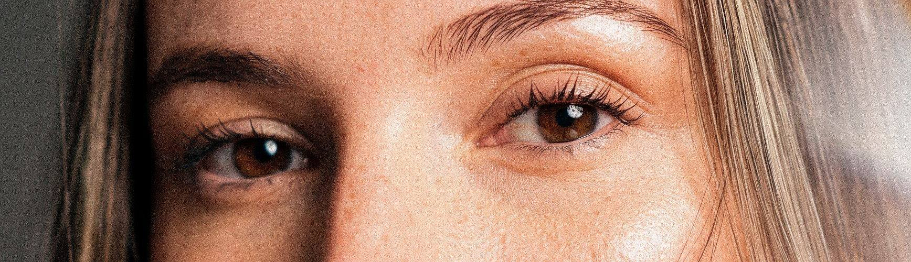

Trained eye. Creative ideas.
10+ years of designI design scroll-stopping static ads for Meta and paid social, built as variations designed for A/B testing, for fashion, lifestyle and home brands. 10+ years turning briefs into creative that sells, now with AI in my production pipeline: more concepts, more variations, same brand standards, a fraction of the time.
Several campaigns were originally created in Portuguese for Brazilian brands. I recreated some of them in English myself; the others keep their original Portuguese copy, with each case explained in English.
What a creative strategist gets when they send me a brief.
I start from the audience and the offer, not the layout. Every ad has one job and one idea, written and designed to stop the thumb in the first second.
Each concept ships as a set: different hooks, angles, colors and layouts, so the team learns what converts instead of guessing.
Hyperrealistic lifestyle shots, outpainting, product-in-hand scenes and fast resizes, generated and art-directed by me, always true to the real product.
Urgent requests and high volume are normal. Clean Figma files, every format (feed, stories, landscape, banners) and brand guidelines respected.
I'm a Senior Graphic Designer who grew up inside marketing teams. I've built a marketing department from scratch for a cosmetics and home-fragrance brand, designed for fashion retailers and housewares manufacturers, and today run my own creative studio serving brands on tight timelines.
What I bring to a performance team: I read a brief like a strategist, I design like a brand guardian, and I produce like there's a launch tomorrow, because there usually is. I'm proactive, I flag ideas before I'm asked, and I'm happy with paid practical assessments.